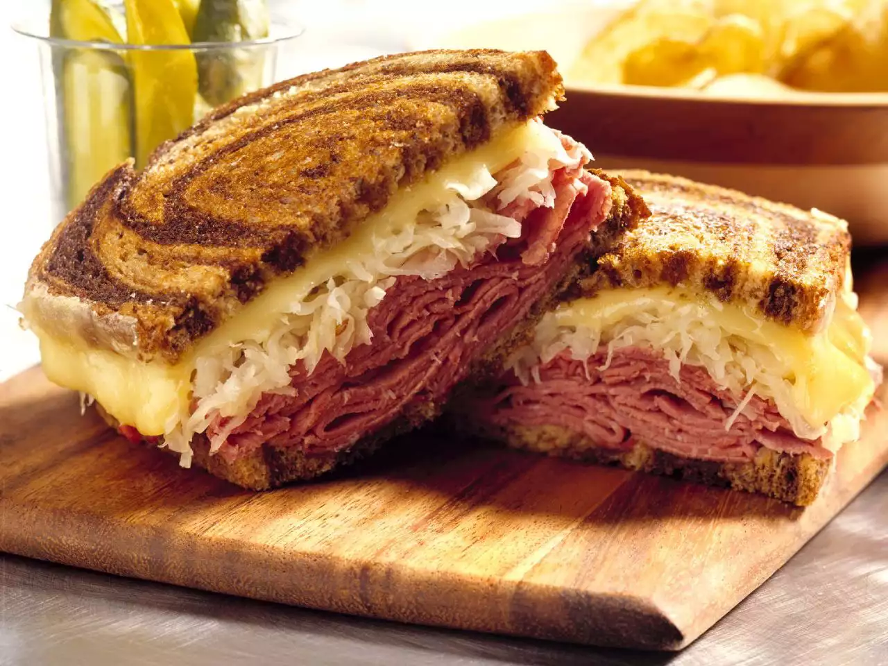

Reuben Sandwich

These sandwiches are really delicious and easy to make.
A family fix-it-quick favorite. Serve with big bowls of steaming vegetable soup and dill pickles on the side. Enjoy!
Ingredients
- 2 tablespoons butter
- 8 slices rye bread
- 1 slices deli sliced corned beef
- 8 slices Swiss cheese
- 1 cup sauerkraut, drained
- 1/2 cup Thousand Island dressing
Steps
- Step 1: Preheat large skillet or griddle on medium heat.
- Step 2: Lightly butter one side of bread slices. Spread non-buttered sides with Thousand Island dressing. On 4 bread slices, layer 1 slice Swiss cheese, 2 slices corned beef, 1/4 cup sauerkraut and second slice of Swiss cheese. Top with remaining bread slices, buttered sides out.
- Step 3: Grill sandwiches until both sides are golden brown, about 5 minutes per side. Serve hot.